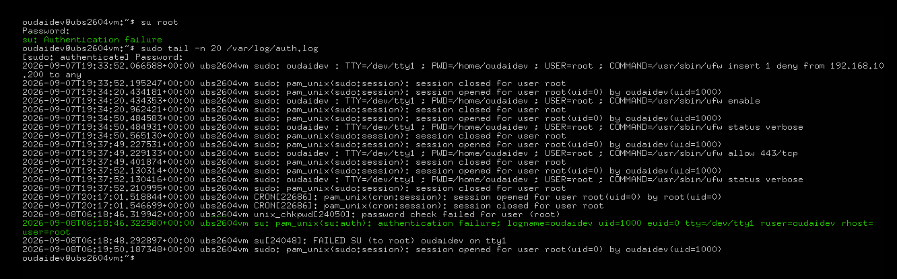

In an enterprise network, defensive perimeters are insufficient on their own. Firewalls stop what's outside; they say nothing about what's already authenticated inside. Sophisticated adversaries know this — they blend into background noise by running low-and-slow vertical privilege cracking sweeps against administrative service wrappers, hoping the perimeter won't notice traffic that originated from an internal IP with a valid session.
This engagement evaluates the opposite side of that equation: whether the operating system's native logging stack is capable of preserving the forensic trail when an internal actor attempts to escalate privileges. The test is deliberately simple — a simulated insider attempt — but the analysis that follows is the real work.
All activity was performed inside an isolated lab VM. The "breach" in Phase 1 is a self-inflicted simulation by the analyst acting as an insider threat — the goal is to validate detection and forensic reconstruction, not to investigate a real incident.
Security Anomaly Detonation & Event Tracking
To test reporting visibility, a mock credential hijack was simulated. The analyst — acting
as an insider with a valid low-privilege account — attempted a direct administrative shell
escalation via the standard su wrapper:
su rootThe privilege escalation was deliberately failed — an invalid, high-entropy password string was injected into the credential check loop. That failure is the entire point of the exercise. A successful escalation would have granted access; a failed one leaves a forensic trail without providing any actual foothold. The simulator gets the telemetry of an attack without any of its consequences.
The kernel immediately intercepted the rogue execution. The privilege escalation was blocked,
the credential check was rejected, and — critically — the operating system dropped a hard
su: Authentication failure event code straight to disk storage. Nothing was
suppressed, nothing was lost to a buffer, and the raw metadata was preserved before the
process even exited.
Forensic Log Dissection & Threat Hunting
With the anomaly detonated, an administrative threat-hunting sweep was executed against the
server's primary secure authentication ledger. The
tail -n 20 boundary filter was used to isolate the most recent chronological
event entries — the standard first pass any analyst runs when hunting for evidence of
recent activity:
sudo tail -n 20 /var/log/auth.logThe log parser bypassed system noise and mapped the exact forensic fingerprint of the attack vector across a single, structured raw data string. Every meaningful attribute of the intrusion is encoded in one line:
2026-09-06T18:46:32.525300+00:00 ubs2604vm su: pam_unix(su:auth): authentication failure; logname=oudaidev uid=1000 euid=0 tty=/dev/tty1 ruser=oudaidev rhost= user=rootThat line is not merely an error message. It is the complete reconstruction of the intrusion attempt — who triggered it, from where, as whom, targeting what, and at what moment in time. Reading it correctly is the difference between a system administrator seeing "a login failed" and a threat analyst seeing an active incident.
Forensic Verification Results
The security event data stream maps cleanly to the classic incident response life cycle, providing 100% forensic alignment across every attribution dimension.
The alert signature identified
The auditing pass exposed an explicit authentication failure state flag —
proof that the operating system natively caught and logged the threat vector rather than
letting it slip through as background noise. The PAM stack recognised the event class
(pam_unix(su:auth)), the subsystem involved (su), and the failure
state, all without any external monitoring agent.
The attacker source discovered
The most valuable forensic data point in the entire log line is the
ruser field. It identifies the exact low-privilege host account that was
compromised to launch the internal attack — the credential whose theft or misuse is the
actual security failure, not the failed escalation itself.
Compromised credential and target asset mapped
The log telemetry identified ruser=oudaidev as the low-privilege account used to launch the internal attack, and user=root as the target asset the adversary was attempting to hijack for full system control. Together these two fields form the attribution chain — the who and the what — from a single line of native operating system output.
-
Target asset isolated. The
user=rootfield explicitly names the account the adversary was attempting to hijack to achieve full system control — the objective of the escalation attempt, mapped without any ambiguity. -
Session context preserved. The
tty=/dev/tty1field identifies the specific virtual console from which the attempt originated — a local terminal rather than a remote pseudo-terminal, which sharpens the insider-threat framing. In this caselogname=oudaidevandruser=oudaidevmatch, confirming the requesting user and the original login user are the same account and ruling out a spliced or forwarded session. -
Remote source field observed. The
rhost=field is empty because this was a local-console attempt. On a remote login the same field would carry the source IP — the single most important attribute in external intrusion analysis, and the reason auth.log is a first-stop artefact in incident response. -
Privilege context confirmed. The
uid=1000 euid=0pairing is critical. The real user ID (1000, the low-privilege account) differs from the effective user ID (0, root) — proving that the escalation attempt was made from an unprivileged context, which is exactly what makes it suspicious. A legitimate root action would showuid=0 euid=0.
Proven event visibility. By tracking behavioural patterns inside central log records, a security analyst can map compromised credentials, construct brute-force timeline constraints, and neutralise malicious actors before data breaches occur. The single log line carries all four attribution dimensions — source account, target account, session identifier, and privilege transition — which is everything needed to open an incident ticket and begin response.

Security & Data Privacy Note
Visual telemetry was monitored via local snapshot archive. The lab account handle, hostname, and process identifiers shown in the presented logs are sandbox-only values and are not associated with any production system. No production infrastructure credentials, gateway masks, or private key material appear in the telemetry shown here.